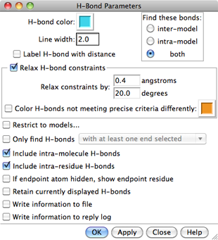

FindHBond uses atom types and geometric criteria to identify possible hydrogen bonds (H-bonds). It is not necessary for hydrogen atoms to be present. All potential H-bonding interactions fulfilling the criteria are shown. For example, even if it is not possible for a particular hydroxyl group to donate a hydrogen bond to two particular acceptors simultaneously, both possibilities will be displayed if the hydroxyl lacks an explicit hydrogen atom. If the hydroxyl group has an explicit hydrogen atom, however, only H-bonds compatible with the position of the hydrogen will be found. See also: AddH, Distances, Find Clashes/Contacts, Intersurf, Rotamers, Metal Geometry
There are several ways to start FindHBond, a tool in the Structure Analysis and Surface/Binding Analysis categories. FindHBond is also implemented as the command hbonds (or findhbond).
|  |
The H-bonds will be shown as lines (a group of pseudobonds named hydrogen bonds) between the donor and acceptor atoms, or if hydrogens are present, between the hydrogens and acceptor atoms. Appearance options:
Relax H-bond constraints indicates that tolerances to Relax constraints by should be applied to the precise geometric criteria. These criteria come from a survey of high-resolution structures; empirically, tolerances of 0.4 angstroms and 20.0 degrees work well for most macromolecular structures. H-bonds within the tolerances but that do not meet the precise criteria can be colored differently than the H-bonds that meet the precise criteria.
The scope of the calculation is controlled under Find these bonds:
The geometric criteria are based on a survey of small-molecule crystal structures, as described in
Three-dimensional hydrogen-bond geometry and probability information from a crystal survey. Mills JE, Dean PM. J Comput Aided Mol Des. 1996 Dec;10(6):607-22.There are many different sets of geometric criteria, corresponding to the many different donor-acceptor combinations (see Tables 5-8 in the reference). There is an upper bound on distance and one or more angular range criteria for each category of H-bond. It is generally useful to relax the criteria since most structures are not as high-resolution as those used in the survey. User-specified tolerances are added to each criterion's upper bound and/or subtracted from its lower bound (depending on the particular criterion).
Chimera uses atom and residue names, or if these are not “standard,” the coordinates of atoms, to determine connectivity and atom types, which in turn determine which geometric criteria are appropriate for detecting a hydrogen bond between specific atoms. Possible donor groups are hydrogen-bearing nitrogen, oxygen, and sulfur atoms, and possible acceptor groups are nitrogen, oxygen, and sulfur atoms with a lone pair. H-bonds involving other types of atoms are not considered. Not all of the possible donor-acceptor combinations were listed in the Mills and Dean parameter tables; some categories of sulfur were not surveyed, and several combinations of the surveyed types were not observed frequently enough to collect good statistics on their geometries. In such cases, FindHbond applies estimated H-bond criteria.
When there are no explicit hydrogens on a potential donor atom, FindHBond will use the donor atom type to infer their presence. For functional groups where the hydrogen positions are well-determined by the positions of the nonhydrogen atoms, the H-bonds detected in the presence and absence of explicit hydrogen atoms should be virtually identical. For functional groups where the hydrogen position is not well-determined (such as rotatable hydroxyls), the presence of an explicit hydrogen atom will limit the detected H-bonds to those appropriate for the observed position, instead of all of its possible positions.